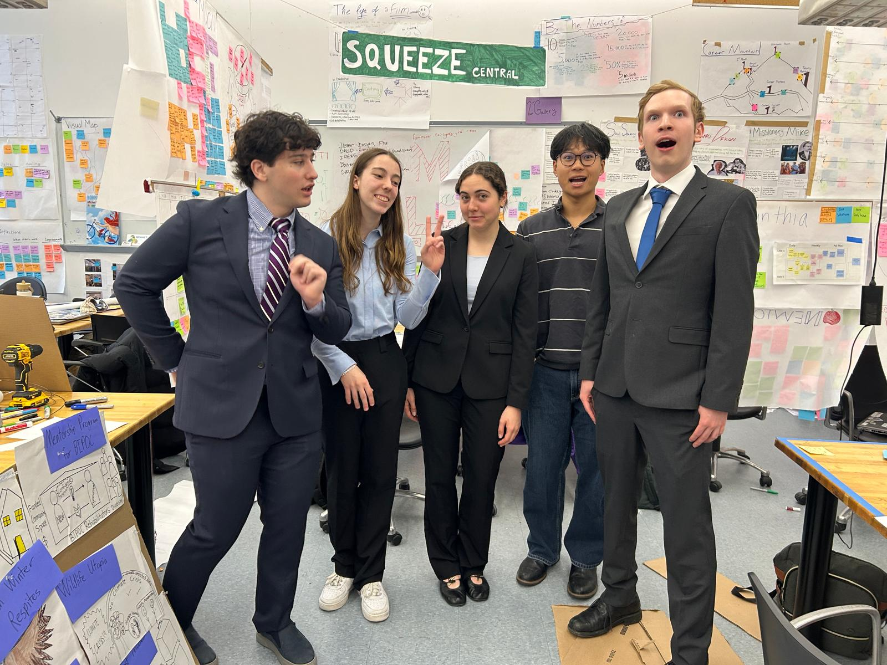

Throughout the course of a semester, our team did an exhaustive design process that taught us how to engage in design with folks that aren't engineers. This process was invaluable in making me a more holistic engineer, and provided me with communication skills that I will be able to use throughout my career.

Our design process had three distinct phases.
We reached out to as many rehabilitators as we could find and asked them about their work. The idea was to avoid asking any leading questions, because we wanted our image of them to be unmarked by our own biases. We ended Phase 1 by creating "personas" — three amalgamations that together represented the group.
We came up with as many ideas as we could to solve the problems our personas ran into, ensuring that we weren't creating solutions to problems that didn't exist. Instead of meeting with rehabilitators to learn about them, in Phase 2 we met with them to workshop ideas, which kept our ideas grounded in actually helping them.
Phase 3 was centered on presentation. We no longer met with rehabilitators — we simply made our idea look appealing and presented on it.
From each phase, we were able to learn something different.
Our final concept was the Wildlife Rehabilitator Retreat: to address the burnout and isolation so many rehabilitators face, we designed a safe space where they could come together, enjoy nature and each other's company, and have a genuine mental reset — while a trained substitute cared for their animals in the meantime. The rehabilitators we spoke with responded to the idea enthusiastically, but it's worth noting that this project was never really about the final concept; it was about the process that got us there. I learned far more from ideating this retreat than actually building it could have ever taught me. My teaming skills, ideation ability, and charisma while interviewing people all improved dramatically over the course of this project, to name just a few of the soft skills I gained. Ultimately, I believe this project prepared me to be a professional engineer more than many technical classes have, because it gave me invaluable design experience.